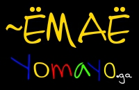
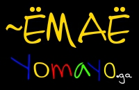

Я не знаю что это за гады, которые в html подставляют тег
, которого у меня нет, но я бы им голову отбил бы, я по поводу того, что мне кто-то срёт в вёрстку, а я типа дурачёк. Причём замечено уже не раз, что кто-то левый копошится то в коде HTML, то в коде CSS, может быть этим клопам занятся нечем?
Ёмаё, давольно странное слэнговое выражение, которое издавна употребляется на Руси. Происхождение слова неизвестно, вполне вероятно, нейкий яркий, харизматичный человек начал употреблять его в случаях удивления чему-либо, а дальше слово подхватили другие и территория его употребления расширилась.
- Ёмаё, ну что вы творите? - Ёмаё, опять молоко скисло! - Ну, ёма-ё! - воскликнул дровосек, обнаружив, что его поленница пуста и пошёл рубить опять дрова.
Предположение о сокрытии нецензурщины.
Вполне возможно, что для того, что бы не употреблять нецензурные слова в присутствии кого либо (предполагается слово e*aть и производное от него ё*) их сохранили. К примеру мамаша спрашивает у сынка: - А ты хоть ё* её? - Да ё*, ма, ё*! Безусловно английский вариант начертания так-же интересен, так как YO! - это призыв, который переводится как ЭЙ! - ЭЙ! МА! Сделай мне риса! В свою очередь с испанского Yo, переводится как Я! И конечно же можно вспомнить чудесную игрушку йо-йо... Это те небольшие познания, которыми я могу подилится с вами по поводу этого словосочетания, ну ga и ли джа это божество растофарианцев (есть такая религия, которая исповедует Мир брат!
 
